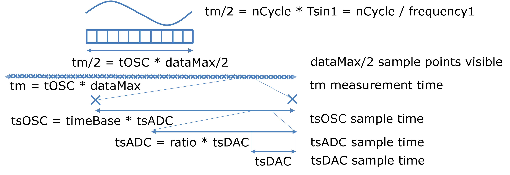

Timing of Arbitrary Waveform Generator with respect to OSC and FFT in NodeEEBenchJörg Vollrath, University of Applied Science Kempten, Germany, Joerg.vollrath@hs-kempten.deAugust, 2025  Figure: Timing basics OverviewArbritrary waveform generator and oscilloscope map voltage and frequency to positive integer digital values and sampling rates for ADC and DAC. Correct timing control of the system is difficult due to different ADC and DAC sampling rates and oscilloscope time base and buffer size. FFT without bleeding requires an odd number of cycles, making it necessary to adjust the chosen frequency. The software has to be adapted to the hardware requirements at the ADC, DAC control, the server side simulation and the client user interface. This document covers the implementation and test. To Do List
Done List
|
| Serial command | FPGA hardware,software | Arduino hardware,software | Server Simulation | Client function, variable, id | |
| DAC sample rate | "S","T" | 10 ns | 430 us | 1 us | "AWG1tsVal" |
| DAC resolution | "S","T" | 16 (R2R DAC) | 12 | 16 | "AWG1ResVal" |
| ADC sample rate | "O" | 8.32 us | 430 us | 1 us | "timeSampling" |
| ADC resolution | 12 | 12 | 12 | ||
| AWG frequency | "S","T" | genCmdAWG() | |||
| OSC time base | "O" | confOsc() "baseVal" | |||
| OSC block size | "O" | "dataMax" |
entity sineX is
Port (
CLK : in STD_LOGIC;
RST: in STD_LOGIC;
step: in STD_LOGIC_Vector(31 downto 0); -- increment
amplitude: in STD_LOGIC_Vector(31 downto 0); -- signal amplitude
offset: in STD_LOGIC_Vector(31 downto 0); -- signal offset
mySine: out STD_LOGIC_Vector(31 downto 0)
);
end sineX;
From 'step' (in degree) a real and imaginary part (StepRe, StepIm) are calculated for
complex calculation of next complex sine value (X):stepS = hexToDec(myString.substring(1,7)); // 24 bit, 6 hex; from 32 bit value, 8 hex ampS = hexToDec(myString.substring(9,13))/8; // 12 bit, 3 hex; from 32 bit value, 8 hex offS = hexToDec(myString.substring(17,21))/8; // 12 bit, 3 hex; from 32 bit value, 8 hex // Generate Analog value sine stepS range integer mapped to 0..1 by / 16 M awgX = (int)(offS) + (int)(ampS) * sin( TWO_PI * stepIndex * stepS / 1024 /1024 / 16 );At the moment the sample time is 480 us.
timeBase = Math.round(unitToValue(document.getElementById("baseVal").value) * 20
/ dataMax / unitToValue(document.getElementById("timeSampling").value));
Since this can generate a timeBase of 0, which is difficult to handle at the FPGA side,
timeBase + 1 is sent via serial communication.
cmdO += decToHex((timeBase + 1),4); // Sampling next FPGA 0 and 1 same!
function genCmdAWG()
var timeBaseX = timeBase;
if (timeBaseX == 0) timeBaseX += 1;
var tm = ts * timeBaseX * dataMax / 2 ; // displayed measurement time tm
nCycle = tm * frequency; //
if ( nCycle >= 1) {
nCycle = Math.round(nCycle);
if (nCycle % 2 == 0) nCycle = nCycle + 1;
}
frequency1 = nCycle / tm; // fix integer cycles
step = Math.trunc( tsDAC * frequency1 * 1024 * 1024 * 1024 * 4 ); // range 0..1
(2) Sine calculation (server, ServerEEbench.js) corrects the timeBase (mulTime), takes into account the step (step)
and the ratio of tsADC/tsDAC (ratio).
if (mulTime > 1) { mulTime -= 1; }
for (var i = 0; i < blockSize; i ++) { // only sampling
for (var j = 0; j < ratio * mulTime; j ++) { // generate all points for DAC
var timeX = 2 * Math.PI * (i * ratio * mulTime + j) * step / 1024 / 1024 / 1024 / 4 ;
voltageC1 = Math.round(offset + amplitude * Math.sin(timeX)); //
}
}
(3) Time step calculation (client, NodeEEBench.html) should be based on (OSC, Time Base).
if (timeBase == 0) { timestep = timeSampling * (timeBase + 1); //
} else {timestep = timeSampling * timeBase; }
6.08.2025: Test AWG1 simulation with frequency of 20 Hz, 100 Hz, 1 kHz and Amplitude 0.4 V,
Offset 0.5 V, OSC TimeBase 100 us/div, 2 ms/div, 10 ms/div, 100 ms/div and
block size of (256 of 512), (1024 of 2048) and (4096 of 8192) showed good signals and FFTs.| Time Base | 100 us/div | 200 us/div | 500 us/div | 1 ms/div | 2 ms/div |
| timeBase | 1 | 2 | 4 | 6 | 10 |
function genCmdAWG() {
var boardX = parseInt(document.getElementById("board").value);
if (boardX == 0) {
// document.getElementById("timeSampling").value = 8.32E-6;
nSample = 13 * 128; // 8.32us / 10 ns * 2 FGA = Math.trunc(8.32E-6/10E-9*2)
maxC = 32767;
} else if (boardX == 2) {
// document.getElementById("timeSampling").value = 360E-6;
nSample = 72000 * 3; // 360us / 10 ns * 2 Arduino Maker WiFi = Math.trunc(360E-6/10E-9 * 2 * 3)
maxC = 4095;
}
cmd = "S"; // Sine
ampC = Math.trunc( (2*1024*1024*1024-1) / maxV * amp); // Range 0.. 2^30
offC = Math.trunc( (2*1024*1024*1024-1) / maxV * off);
if (offC >= 2*1024*1024*1024) { offC = 2*1024*1024*1024-1; }
if ((offC + ampC) >= 2*1024*1024*1024) { ampC = 2*1024*1024*1024-1-offC; }
if ((offC - ampC) < 0) { ampC = offC; }
// correct step with better frequency for good fft
// timeBase = 4 fft good 256 samples, 1 ms/div time base oscilloscope
var timeX = (timeBase + 1)/4; // For slow timeBase sampling gets slower
// fix nCycle to odd (prime)
// Measurement Time: Buffer size(dataMax) * sample time OSC(1/fCalc) * sample frequency(timeX,timeBase)
// * nSample(Dac outputs per OSC sample)
// Cycle Time: 1/frequency
var nCycle = dataMax / fCalc * timeX * nSample * frequency; // number of cycles
if (nCycle > 1) { // Can only fix frequencies with more than 1 cycle
nCycle = Math.round(nCycle);
if ((nCycle % 2) == 0) { nCycle = nCycle + 1; }
var frequency1 = nCycle * fCalc / dataMax / timeX / nSample; // odd corrected frequency
frequency = nearestPrime(nCycle) * fCalc / dataMax / timeX / nSample; // prime corrected frequency
infoX = infoX + " is mapped to " + valueToUnit(frequency1)
+ " prime " + valueToUnit(frequency) + "
\n"
+ " Cycles " + nCycle + "
Np: " + nearestPrime(nCycle) + " fCalc: " + fCalc
+ " dataMax: " + dataMax + " timeX: " + timeX + " nSample: " + nSample
+ " timeBase: " + timeBase;
}
// end correct step size
step = Math.trunc(1024 * 1024 * 8 / fCalc * nSample * frequency) ;
step = (stop - start) / ( Tsignal / 2 / tsDAC) = (stop - start) * frequency * 2 * tsDACAs step approaches small values < 256 the frequency error will be large.
repeat = 1;
// Coarseness 16
var coarse = 16;
if (step < coarse) { repeat = Math.round(coarse / step); }
step = Math.round(step * repeat);
repeat = Math.round(256 / step);
Server Side (ServerEEBench.js)
var deltaX = (stopT - startT);
for (var i = 0; i < blockSize; i ++) {
for (var j = 0; j < mulTime * ratio; j ++) { // take into account ratio=tsADC/tsDAC
var posY = (stepT * Math.trunc( 1 / 16 *(i * mulTime * ratio + j) / repeatT) % (deltaX * 2); // limit to 2 * deltaX
if (posY > deltaX) { posY = 2 * deltaX - posY; } // rising or falling
if ( deltaX == stepT) { // pulse
posY = (Math.trunc( (i * mulTime * ratio + j) / 8 / repeatT) % 2) * deltaX; // factor 8 ??
}
posY = Math.round(startT + posY);
}
}
// Generate Analog value Triangle
int deltaX = (stopT - startT);
int posY = ((int)(stepT) * (stepIndex / repeatT) ) % ( deltaX * 2);
if (posY > deltaX) posY = 2 * deltaX - posY;
if ( deltaX == stepT){ // Pulse
posY = ((stepIndex * 2 / repeatT) % 2) * deltaX;
}
awgY = (int)(startT) + posY; // startT plus posY
if (curveTyp == 4) { // Stair
cmd = "T"; // triangle
start = Math.trunc(maxC / maxV * (off-amp));
stop = Math.trunc(maxC / maxV * (off+amp));
if (start < 0) start = 0;
if (stop > maxC) stop = maxC;
repeat = Math.trunc(1 / frequency / 2 * fCalc / 5); // 1E8 fFPGA
if (repeat == 0) {
repeat = 1; // ??
} else {
step = Math.trunc((stop-start)/5);
stop = Math.trunc((stop-start)/step)*step + start;
}
_tabAct=1; AWG tab activation
_setWave=1; AWG1; select Sine
#amplitudeVal=0.4 V; AWG1; set Amplitude
#offset1Val=0.5 V; AWG1; set Offset
;sloop #baseval=('5 ms/div','200 us/div'); OSC; Time Base
#baseVal=5 ms/div, OSC, set Time Base
;floop #frequencyVal=('40 Hz','500 Hz'); AWG1; Frequency
#frequencyVal=40 Hz; AWG1; Frequency ======Sine======================
_tabAct=1; AWG1 tab
_aOp=Run; AWG1; Run (continous)
_tabAct=2; OSC tab
_oOp=Run; OSC; Run (once)
-Measurement with 5 ms/div, avg=0.5V, amp=0.4V, frequency=40Hz<br>
#oAWG1Avg; OSC; Measure; AWG1 average
#oAWG1Amp; OSC; Measure; AWG1 amplitude
#oAWG1f; OSC; Measure; AWG1 frequency
- <br>
#oC1Avg; OSC; Measure; C1 average
#oC1Amp; OSC; Measure; C1 amplitude
#oC1f; OSC; Measure; C1 frequency
_oOp=Stop; OSC; Stop (once)
#frequencyVal=100 Hz; AWG1; Frequency ===================================
_aOp=Run; AWG1; Run (continous)
_oOp=Run; OSC; Run (once)
- <br>
-Measurement: frequency=100Hz<br>
#oAWG1f; OSC; Measure; AWG1 frequency
- <br>
_oOp=Stop; OSC; Stop (once)
#frequencyVal=300 Hz; AWG1; Frequency ===================================
_aOp=Run; AWG1; Run (continous)
_oOp=Run; OSC; Run (once)
-Measurement: frequency=300Hz<br>
#oAWG1f; OSC; Measure; AWG1 frequency
- <br>
#baseVal=1 ms/div, OSC, Time Base =======================================
-Measurement: 1 ms/div, frequency=300Hz<br>
#oAWG1f; OSC; Measure; AWG1 frequency
- <br>
_oOp=Stop; OSC; Stop (once)
_fOp=Run; FFT tab ==================================FFT AWG===============
#fftSrc=1; FFT select AWG1
_cHarm; FFT calculate Harmonics
#fftTable; FFT table
- Index:
#fftIndex0; FFT Measure
- Frequency:
#fftfreq0; FFT Measure
- Signal magnitude:
#fftSM0; Signal magnitude FFT Measure
- Noise magnitude:
#fftNM0; FFT Noise magnitude Measure
-<br>
#fftSrc=2; FFT select C1 ==========================FFT C1=================
_cHarm; FFT calculate Harmonics
#fftTable; FFT table
_tabAct=12; Test flow tab
_tOp=Stop; Test flow stop
;eloop